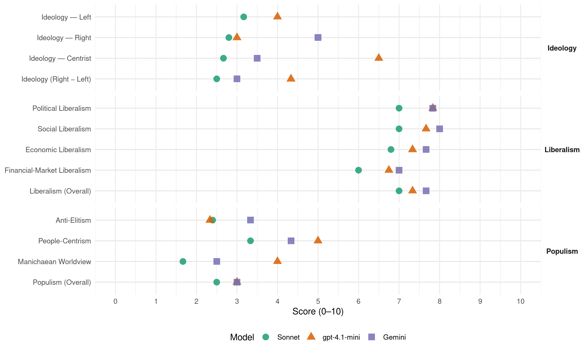

PNV/EAJ (Spain, 1996)
manifesto_id 33902_199603
Get full text: This site shows derived annotations and short verbatim quotes only. The full manifesto text is © Manifesto Project / WZB — obtain it via manifesto-project.wzb.eu using the manifesto_id above.
Headline scores
| Dimension | Sonnet | gpt-4.1-mini | Gemini |
|---|---|---|---|
| Populism (Overall) | 2.5 | 3.0 | 3.0 |
| Anti-Elitism | 2.4 | 2.3 | 3.3 |
| People-Centrism | 3.3 | 5.0 | 4.3 |
| Manichaean Worldview | 1.7 | 4.0 | 2.5 |
| Ideology (Right − Left) | 2.5 | 4.3 | 3.0 |
| Liberalism (Overall) | 7.0 | 7.3 | 7.7 |
| Political Liberalism | 7.0 | 7.8 | 7.8 |
| Social Liberalism | 7.0 | 7.7 | 8.0 |
| Economic Liberalism | 6.8 | 7.3 | 7.7 |
| Financial-Market Liberalism | 6.0 | 6.8 | 7.0 |
Evidence per dimension
Economic Liberalism
Gemini · score 7.0 · verified · chunk 1
“libre juego de los mercados”
facilitar las fuerzas de la competencia y el libre juego de los mercados pero bajo una perspectiva general
Gemini · score 8.0 · verified · chunk 2
“desregularizar, liberalizar y fomentar la competencia”
evidente la necesidad de desregularizar, liberalizar y fomentar la competencia, entre otras, en las siguientes
Gemini · score 9.0 · verified · chunk 3
“un riguroso programa de privatizaciones”
La puesta en marcha de un riguroso programa de privatizaciones debe constituir uno de los ejes
Gemini · score 7.0 · verified · chunk 4
“desarrollo de empresas competitivas tanto en el entorno”
Defensa ante el estado español de la creación de unas condiciones que permitan el desarrollo de empresas competitivas tanto en el entorno europeo como internacional.
Gemini · score 7.0 · verified · chunk 5
“superar concepciones proteccionistas e intervencionistas”
autonomía de la financiación de los programas culturales, se superen concepciones proteccionistas e intervencionistas y se contemple, en consecuencia, el sector cultural
Gemini · score 8.0 · verified · chunk 6
“el libre mercado, según leyes y reglas”
En este sentido, el libre mercado, según leyes y reglas establecidas de común acuerdo por el conjunto
gpt-4.1-mini · score 7.0 · verified · chunk 1
“la construcción del mercado único europeo no tiene otro objetivo que facilitar las fuerzas de la competencia”
…la construcción del mercado único europeo no tiene otro objetivo que facilitar las fuerzas de la competencia y el libre juego de los mercados pero bajo una perspectiva general de coordinación; es decir, con políticas comerciales e industriales y de tecnología estratégica…
gpt-4.1-mini · score 7.0 · verified · chunk 2
“desregularizar, liberalizar y fomentar la competencia”
Así, es evidente la necesidad de desregularizar, liberalizar y fomentar la competencia, entre otras, en las siguientes áreas: - Telecomunicaciones - Vivienda y suelo - Crédito y seguros - Energía eléctrica - Distribución de productos petrolíferos - Servicios portuarios - Transporte - Comercio minorista - Monopolios locales
gpt-4.1-mini · score 8.0 · verified · chunk 3
“la política industrial del Estado en la legislatura 1996-2000”
La puesta en marcha de un riguroso programa de privatizaciones debe constituir uno de los ejes fundamentales de la política industrial del Estado en la legislatura 1996-2000. La actual coyuntura económica, los niveles de déficit público, la situación de los mercados de trabajo, la extensión de la mentalidad empresarial a todos los campos de actuación, la modernización del sistema económico y, sobre todo, la realidad de un sistema empresarial público adscrito al Estado, obsoleto en su gestión y dirigido más con criterios políticos que económicos, exigen tender a la privatización como instrumento para sanear las finanzas públicas, aumentar la eficiencia del tejido productivo, extender los derechos de propiedad y limitar el poder del Estado sobre la economía.
gpt-4.1-mini · score 7.0 · verified · chunk 4
“Euzko Alderdi Jeltzalea-Partido Nacionalista Vasco apoya la existencia de una sistema mixto, en el que convivan la asistencia sanitaria pública con la iniciativa privada de manera complementaria y primen los criterios de eficacia sanitaria y social”
- Uso óptimo de los recursos: Euzko Alderdi Jeltzalea-Partido Nacionalista Vasco apoya la existencia de una sistema mixto, en el que convivan la asistencia sanitaria pública con la iniciativa privada de manera complementaria y primen los criterios de eficacia sanitaria y social. Así, Euzko Alderdi Jeltzalea- Partido Nacionalista Vasco impulsará, dentro de las posibilidades presupuestarias, un uso óptimo de todos los recursos disponibles, favoreciendo su desarrollo y complementaridad, mejorando su calidad, aprovechando la diversificación existente y adaptándola a las necesidades de la población.
gpt-4.1-mini · score 7.0 · verified · chunk 5
“superar concepciones proteccionistas e intervencionistas”
…se refuerce la autonomía de la financiación de los programas culturales, se superen concepciones proteccionistas e intervencionistas y se contemple, en consecuencia, el sector cultural como un sector productivo específico…
gpt-4.1-mini · score 8.0 · verified · chunk 6
“la iniciativa privada, conjugada con una política de los poderes públicos responsable y estimuladora, debe constituir el motor principal del desarrollo”
Propugnamos que la iniciativa privada, conjugada con una política de los poderes públicos responsable y estimuladora, debe constituir el motor principal del desarrollo. En este sentido, el libre mercado, según leyes y reglas establecidas de común acuerdo por el conjunto de los participantes, constituye el mejor medio para alcanzar una economía eficaz.
Sonnet · score 6.0 · verified · chunk 1
“libre juego de los mercados”
La construcción del mercado único europeo no tiene otro objetivo que facilitar las fuerzas de la competencia y el libre juego de los mercados pero bajo una perspectiva general de coordinación
Sonnet · score 7.0 · verified · chunk 2
“desregularizar, liberalizar y fomentar la competencia”
es evidente la necesidad de desregularizar, liberalizar y fomentar la competencia, entre otras, en las siguientes áreas: Telecomunicaciones, Vivienda y suelo, Crédito y seguros
Sonnet · score 8.0 · verified · chunk 3
“riguroso programa de privatizaciones”
La puesta en marcha de un riguroso programa de privatizaciones debe constituir uno de los ejes fundamentales de la política industrial
Sonnet · score 5.0 · mixed · chunk 4
“competencia entre grandes superficies”
Euzko Alderdi Jeltzalea-Partido Nacionalista Vasco cree conveniente un incremento de la competencia entre grandes superficies que contribuya a un marco más adecuado
Sonnet · score 6.0 · verified · chunk 5
“superar concepciones proteccionistas e intervencionistas”
se refuerce la autonomía de la financiación de los programas culturales, se superen concepciones proteccionistas e intervencionistas y se contemple, en consecuencia, el sector cultural como un sector productivo específico
Sonnet · score 7.0 · verified · chunk 6
“el libre mercado, según leyes y reglas establecidas”
el libre mercado, según leyes y reglas establecidas de común acuerdo por el conjunto de los participantes, constituye el mejor medio para alcanzar una economía eficaz.
Financial-Market Liberalism
Gemini · score 7.0 · verified · chunk 1
“liberalización de los mercados financieros”
La liberalización de los mercados financieros fomentará la competitividad a través de una mejor asignación
Gemini · score 8.0 · verified · chunk 2
“segundo mercado de valores”
desarrollarse son: - El segundo mercado de valores, diseñado e impulsado por la Bolsa
Gemini · score 8.0 · verified · chunk 3
“Segundo Mercado de Valores para las PYMEs”
puesta en marcha de dos nuevos instrumentos: - Segundo Mercado de Valores para las PYMEs, cuya implementación va a permitir
Gemini · score 6.0 · verified · chunk 4
“fórmulas de financiación que resulten adecuadas”
facilitando la participación de las tripulaciones en el accionariado mediante el desarrollo de las fórmulas de financiación que resulten adecuadas.
Gemini · score 6.0 · verified · chunk 5
“dotar desde las Instituciones de un marco económico-financiero-fiscal”
al que hay que dotar desde las Instituciones de un marco económico-financiero-fiscal ad hoc que responsa a las necesidades específicas del
Gemini · score 7.0 · verified · chunk 6
“Fondo Monetario Internacional, democratizado en su funcionamiento”
El Fondo Monetario Internacional, democratizado en su funcionamiento y en su composición, deberá convertirse
gpt-4.1-mini · score 6.0 · verified · chunk 1
“la liberalización de los mercados financieros fomentará la competitividad a través de una mejor asignación de los recursos”
…la liberalización de los mercados financieros fomentará la competitividad a través de una mejor asignación de los recursos. Y la libre movilidad geográfica de los trabajadores, especialmente en el caso de profesionales, especialistas y artesanos…
gpt-4.1-mini · score 7.0 · verified · chunk 2
“potenciando las Sociedades de Garantía Recíproca, el fomento del Capital Riesgo y el acceso de las PYMEs a mercados bursátiles”
- Apoyo a la financiación: Potenciando las Sociedades de Garantía Recíproca, el fomento del Capital Riesgo y el acceso de las PYMEs a mercados bursátiles.
gpt-4.1-mini · score 7.0 · verified · chunk 3
“instrumentos financieros cuyo objetivo sea mejorar la estructura financiera empresarial”
Euzko Alderdi Jeltzalea-Partido Nacionalista Vasco propone la creación e impulso de instrumentos financieros cuyo objetivo sea mejorar la estructura financiera empresarial en las siguientes áreas: - Reforzamiento de los Fondos Propios mediante el desarrollo de las sociedades de Capital Riesgo y de Préstamos Participativos. - Financiación a largo plazo con los siguientes instrumentos: - Subvención de tipos de interés, facilitando el acceso de las PYMEs a préstamos bancarios a largo plazo a un coste asumible con un elevado efecto multiplicador.
gpt-4.1-mini · score 7.0 · verified · chunk 6
“el Fondo Monetario Internacional, democratizado en su funcionamiento y en su composición, deberá convertirse en el Banco Central Mundial”
El Fondo Monetario Internacional, democratizado en su funcionamiento y en su composición, deberá convertirse en el Banco Central Mundial, como se previó originalmente, con el fin de asegurar la estabilidad de las tasas de cambio y de preparar el establecimiento de un sistema monetario mundial que prefigure una eventual moneda mundial común, lo que ha faltado desde que se abandonó el patrón oro.
Sonnet · score 6.0 · verified · chunk 1
“La liberalización de los mercados financieros”
La liberalización de los mercados financieros fomentará la competitividad a través de una mejor asignación de los recursos
Sonnet · score 6.0 · verified · chunk 2
“segundo mercado de valores, diseñado e impulsado por la Bolsa de Bilbao”
El segundo mercado de valores, diseñado e impulsado por la Bolsa de Bilbao, dentro de la potenciación de Bilbao como plaza financiera. Su objetivo es el de consolidar la estructura financiera de la mediana empresa.
Sonnet · score 7.0 · verified · chunk 3
“Segundo Mercado de Valores para las PYMEs”
Segundo Mercado de Valores para las PYMEs, cuya implementación va a permitir un reforzamiento de los fondos propios de las PYMEs mediante el acceso a nuevas formas de capitalización/financiación
Sonnet · score 5.0 · verified · chunk 4
“fórmulas de financiación que resulten adecuadas”
facilitando la participación de las tripulaciones en el accionariado mediante el desarrollo de las fórmulas de financiación que resulten adecuadas
Sonnet · score 6.0 · verified · chunk 5
“libre competencia y la libertad de distribución”
A fin de garantizar la libre competencia y la libertad de distribución y recepción de todas las emisoras públicas y privadas, Euzko Alderdi Jeltzalea-Partido Nacionalista Vasco propone
Sonnet · score 6.0 · verified · chunk 6
“Fondo Monetario Internacional, democratizado en su funcionamiento”
El Fondo Monetario Internacional, democratizado en su funcionamiento y en su composición, deberá convertirse en el Banco Central Mundial, con el fin de asegurar la estabilidad de las tasas de cambio y de preparar el establecimiento de un sistema monetario mundial.
Political Liberalism
Gemini · score 8.0 · verified · chunk 1
“ejercicio de la democracia”
atenta directamente contra la libertad y el ejercicio de la democracia.
Gemini · score 8.0 · verified · chunk 2
“desarrollo libre y democrático de los ciudadanos”
bienestar y la cohesión social, el desarrollo libre y democrático de los ciudadanos, y la identidad nacional, aspectos
Gemini · score 7.0 · verified · chunk 3
“recuperación de las libertades del Pueblo vasco”
transcurridos desde el inicio de la recuperación de las libertades del Pueblo vasco hasta este mismo momento.
Gemini · score 7.0 · verified · chunk 4
“derecho de las Comunidades Autónomas a participar”
pero es, también, una cuestión de sensibilidad frente al derecho de las Comunidades Autónomas a participar tanto en la definición de la voluntad del Estado
Gemini · score 8.0 · verified · chunk 5
“sistema de división de poderes similar al que rige”
deben permitir que las Instituciones europeas se basen en el sistema de división de poderes similar al que rige en los entornos democráticos. La reforma debe afectar
Gemini · score 9.0 · verified · chunk 6
“expansión de la Democracia Parlamentaria”
nos congratulamos de la expansión de la Democracia Parlamentaria que está llegando a lugares
gpt-4.1-mini · score 8.0 · verified · chunk 1
“la voz de los intereses vascos en el parlamento español tiene que ser clara, poderosa”
…la voz de los intereses vascos en el parlamento español tiene que ser clara, poderosa, sin contradicciones, sabiendo aglutinar y expresar la pluralidad y realidad de nuestro Pueblo. Y Euzko Alderdi Jeltzalea-Partido Nacionalista Vasco está en la mejor disposición para realizar este trabajo…
gpt-4.1-mini · score 8.0 · verified · chunk 2
“desarrollo libre y democrático de los ciudadanos”
La mejora de la calidad de vida, a través del bienestar y la cohesión social, el desarrollo libre y democrático de los ciudadanos, y la identidad nacional, aspectos difícilmente cuantificables en un indicador económico.
gpt-4.1-mini · score 7.0 · verified · chunk 3
“la presencia de representantes vascos que vigilen y defiendan los intereses medioambientales”
No debemos olvidar que el beneficio de todos lo es también para Euzkadi. Si por otra parte tenemos en cuenta que los parlamentos español y europeo pueden adoptar decisiones, leyes y directrices de aplicación en Euzkadi, es necesaria la presencia de representantes vascos que vigilen y defiendan los intereses medioambientales de nuestra tierra.
gpt-4.1-mini · score 7.0 · verified · chunk 4
“la universalidad, porque atiende a todos los ciudadanos; - la equidad, porque es accesible en igualdad a todos; - la solidaridad, porque cada ciudadano aporta de acuerdo a sus posibilidades; y - la calidad, porque el sistema de salud cuenta con equipos humanos cualificados y los resultados son satisfactorios”
Euzko Alderdi Jeltzalea-Partido Nacionalista Vasco, consciente del enorme reto al que se enfrenta la sanidad, y en general el Estado de Bienestar, quiere liderar la reforma del sistema de salud para consolidar, y fortalecer si cabe, los cuatro pilares básicos de nuestro sistema: - la universalidad, porque atiende a todos los ciudadanos; - la equidad, porque es accesible en igualdad a todos; - la solidaridad, porque cada ciudadano aporta de acuerdo a sus posibilidades; y - la calidad, porque el sistema de salud cuenta con equipos humanos cualificados y los resultados son satisfactorios. El cambio estratégico que propone Euzko Alderdi Jeltzalea-Partido Nacionalista Vasco se articula en torno a cinco ideas fuerza:
gpt-4.1-mini · score 8.0 · verified · chunk 5
“la profundización y reforzamiento de nuestra democracia”
…una profundización y reforzamiento de nuestra democracia. Desde estos parámetros, Euzko Alderdi Jeltzalea-Partido Nacionalista Vasco quiere afrontar los problemas que tiene nuestra sociedad…
gpt-4.1-mini · score 9.0 · verified · chunk 6
“la expansión de la Democracia Parlamentaria que está llegando a lugares donde jamás ha habido cultura democrática”
Asimismo nos congratulamos de la expansión de la Democracia Parlamentaria que está llegando a lugares donde jamás ha habido cultura democrática, contribuyendo de este modo a extender la libertad política y, por ende, a incrementar los niveles de solidaridad y justicia social.
Sonnet · score 7.0 · verified · chunk 1
“reforzar su independencia real”
Euzko Alderdi Jeltzalea-Partido Nacionalista Vasco a considerar necesaria y urgente una reflexión sobre la configuración de este Poder, en el sentido de reforzar su independencia real
Sonnet · score 7.0 · verified · chunk 2
“desarrollo libre y democrático de los ciudadanos”
La mejora de la calidad de vida, a través del bienestar y la cohesión social, el desarrollo libre y democrático de los ciudadanos, y la identidad nacional
Sonnet · score 6.0 · verified · chunk 3
“participación directa de las Instituciones Vascas”
Euzko Alderdi Jeltzalea-Partido Nacionalista Vasco defenderá la participación directa de las Instituciones Vascas allí donde el P.D.I. trate de representar
Sonnet · score 7.0 · verified · chunk 4
“derecho de las Comunidades Autónomas a participar”
la consecución del derecho de las Comunidades Autónomas a participar activamente en la definición y aplicación de dichas Políticas
Sonnet · score 7.0 · verified · chunk 5
“profundización y reforzamiento de nuestra democracia”
Ello implica reformas institucionales de participación. En definitiva, una profundización y reforzamiento de nuestra democracia. Desde estos parámetros, Euzko Alderdi Jeltzalea-Partido Nacionalista Vasco quiere afrontar
Sonnet · score 8.0 · verified · chunk 6
“expansión de la Democracia Parlamentaria”
nos congratulamos de la expansión de la Democracia Parlamentaria que está llegando a lugares donde jamás ha habido cultura democrática, contribuyendo de este modo a extender la libertad política.
Liberalism (Overall)
Gemini · score 8.0 · verified · chunk 1
“ejercicio de la democracia”
atenta directamente contra la libertad y el ejercicio de la democracia.
Gemini · score 8.0 · verified · chunk 2
“desregularizar, liberalizar y fomentar la competencia”
evidente la necesidad de desregularizar, liberalizar y fomentar la competencia, entre otras, en las siguientes
Gemini · score 8.0 · verified · chunk 3
“un riguroso programa de privatizaciones”
La puesta en marcha de un riguroso programa de privatizaciones debe constituir uno de los ejes
Gemini · score 7.0 · verified · chunk 4
“desarrollo de empresas competitivas tanto en el entorno”
Defensa ante el estado español de la creación de unas condiciones que permitan el desarrollo de empresas competitivas tanto en el entorno europeo como internacional.
Gemini · score 7.0 · verified · chunk 5
“sistema de división de poderes similar al que rige”
deben permitir que las Instituciones europeas se basen en el sistema de división de poderes similar al que rige en los entornos democráticos. La reforma debe afectar
Gemini · score 8.0 · verified · chunk 6
“el libre mercado, según leyes y reglas”
En este sentido, el libre mercado, según leyes y reglas establecidas de común acuerdo por el conjunto
gpt-4.1-mini · score 7.0 · verified · chunk 1
“la construcción del mercado único europeo no tiene otro objetivo que facilitar las fuerzas de la competencia”
…la construcción del mercado único europeo no tiene otro objetivo que facilitar las fuerzas de la competencia y el libre juego de los mercados pero bajo una perspectiva general de coordinación; es decir, con políticas comerciales e industriales y de tecnología estratégica…
gpt-4.1-mini · score 7.0 · verified · chunk 2
“desregularizar, liberalizar y fomentar la competencia”
Así, es evidente la necesidad de desregularizar, liberalizar y fomentar la competencia, entre otras, en las siguientes áreas: - Telecomunicaciones - Vivienda y suelo - Crédito y seguros - Energía eléctrica - Distribución de productos petrolíferos - Servicios portuarios - Transporte - Comercio minorista - Monopolios locales
gpt-4.1-mini · score 7.0 · verified · chunk 3
“programa de privatizaciones debe constituir uno de los ejes fundamentales”
La puesta en marcha de un riguroso programa de privatizaciones debe constituir uno de los ejes fundamentales de la política industrial del Estado en la legislatura 1996-2000. La actual coyuntura económica, los niveles de déficit público, la situación de los mercados de trabajo, la extensión de la mentalidad empresarial a todos los campos de actuación, la modernización del sistema económico y, sobre todo, la realidad de un sistema empresarial público adscrito al Estado, obsoleto en su gestión y dirigido más con criterios políticos que económicos, exigen tender a la privatización como instrumento para sanear las finanzas públicas, aumentar la eficiencia del tejido productivo, extender los derechos de propiedad y limitar el poder del Estado sobre la economía.
gpt-4.1-mini · score 7.0 · verified · chunk 4
“los cuatro pilares básicos de nuestro sistema: - la universalidad, porque atiende a todos los ciudadanos; - la equidad, porque es accesible en igualdad a todos; - la solidaridad, porque cada ciudadano aporta de acuerdo a sus posibilidades; y - la calidad, porque el sistema de salud cuenta con equipos humanos cualificados y los resultados son satisfactorios”
Euzko Alderdi Jeltzalea-Partido Nacionalista Vasco, consciente del enorme reto al que se enfrenta la sanidad, y en general el Estado de Bienestar, quiere liderar la reforma del sistema de salud para consolidar, y fortalecer si cabe, los cuatro pilares básicos de nuestro sistema: - la universalidad, porque atiende a todos los ciudadanos; - la equidad, porque es accesible en igualdad a todos; - la solidaridad, porque cada ciudadano aporta de acuerdo a sus posibilidades; y - la calidad, porque el sistema de salud cuenta con equipos humanos cualificados y los resultados son satisfactorios. El cambio estratégico que propone Euzko Alderdi Jeltzalea-Partido Nacionalista Vasco se articula en torno a cinco ideas fuerza:
gpt-4.1-mini · score 8.0 · verified · chunk 5
“una profundización y reforzamiento de nuestra democracia”
…una profundización y reforzamiento de nuestra democracia. Desde estos parámetros, Euzko Alderdi Jeltzalea-Partido Nacionalista Vasco quiere afrontar los problemas que tiene nuestra sociedad…
gpt-4.1-mini · score 8.0 · verified · chunk 6
“la expansión de la Democracia Parlamentaria que está llegando a lugares donde jamás ha habido cultura democrática”
Asimismo nos congratulamos de la expansión de la Democracia Parlamentaria que está llegando a lugares donde jamás ha habido cultura democrática, contribuyendo de este modo a extender la libertad política y, por ende, a incrementar los niveles de solidaridad y justicia social.
Sonnet · score 7.0 · verified · chunk 1
“libre juego de los mercados”
facilitar las fuerzas de la competencia y el libre juego de los mercados pero bajo una perspectiva general de coordinación
Sonnet · score 7.0 · verified · chunk 2
“desregularizar, liberalizar y fomentar la competencia”
es evidente la necesidad de desregularizar, liberalizar y fomentar la competencia, entre otras, en las siguientes áreas: Telecomunicaciones, Vivienda y suelo, Crédito y seguros
Sonnet · score 7.0 · verified · chunk 3
“riguroso programa de privatizaciones”
La puesta en marcha de un riguroso programa de privatizaciones debe constituir uno de los ejes fundamentales de la política industrial
Sonnet · score 6.0 · verified · chunk 4
“derecho de las Comunidades Autónomas a participar”
la consecución del derecho de las Comunidades Autónomas a participar activamente en la definición y aplicación de dichas Políticas
Sonnet · score 7.0 · verified · chunk 5
“profundización y reforzamiento de nuestra democracia”
Ello implica reformas institucionales de participación. En definitiva, una profundización y reforzamiento de nuestra democracia.
Sonnet · score 8.0 · verified · chunk 6
“derechos humanos, las libertades fundamentales y el derecho a la autodeterminación”
el nuevo orden mundial deberá, necesariamente, estar basado en los derechos humanos, las libertades fundamentales y el derecho a la autodeterminación.
Anti-Elitism
Gemini · score 4.0 · verified · chunk 1
“conflictos internos y el comienzo del conocimiento de escándalos”
PSOE contaba con 175 diputados; pero sus conflictos internos y el comienzo del conocimiento de escándalos de gran envergadura comenzaron a minar su credibilidad
Gemini · score 3.0 · verified · chunk 4
“un burdo intento uniformista”
vulneradas por la profusión de normativa estatal que pretendía declarar como materia básica y orgánica un sinfín de áreas y aspectos educativos en un burdo intento uniformista.
Gemini · score 3.0 · verified · chunk 5
“la Administración central ha demostrado escasa sensibilidad”
Estatutos de Autonomía proclaman el plurilingüismo del Estado, la Administración central ha demostrado escasa sensibilidad en esta materia, centrando más sus esfuerzos en
gpt-4.1-mini · score 3.0 · verified · chunk 1
“la corrupción generalizada que ha envuelto la utilización de fondos reservados”
…la violencia de ETA les sirve de coartada para frenar el impulso del nacionalismo vasco en general. ETA es para ellos como la úlcera molesta que se combate con un poco de bicarbonato. La corrupción generalizada que ha envuelto la utilización de fondos reservados, la utilización de medios degradantes en aras a una presunta eficacia policial contra el terrorismo…
gpt-4.1-mini · score 2.0 · verified · chunk 2
“actitudes de defensa corporativa de intereses propios”
Dos millones de desempleados no acreditan sólo un erróneo diseño de la política económica. Denotan un genuino fracaso social, en donde predominan actitudes de defensa corporativa de intereses propios -aun siendo legítimos: económicos, sindicales, de espacio social- sobre los valores de la solidaridad y la justicia.
gpt-4.1-mini · score 2.0 · verified · chunk 3
“el sector público industrial del Estado, tiene un profundo sentido antisocial”
En opinión de Euzko Alderdi Jeltzalea-Partido Nacionalista Vasco, enrocarse en la actual situación de mantenimiento del sector público industrial del Estado, tiene un profundo sentido antisocial, porque se dilapidan los escasos recursos de la sociedad en actividades improductivas y se ofrece una posición de privilegio al sector industrial público frente a las empresas privadas que soportan, sin la asistencia de los recursos presupuestarios públicos, los rigores de la coyuntura y la competencia desleal del sector público.
Sonnet · score 4.0 · mixed · chunk 1
“escándalos de corrupción, la petición de elecciones”
Pese a esta realidad, que es la que queda, todos los escándalos de corrupción, la petición de elecciones anticipadas y la acción del terrorismo han oscurecido
Sonnet · score 2.0 · verified · chunk 2
“actitudes de defensa corporativa de intereses propios”
Denotan un genuino fracaso social, en donde predominan actitudes de defensa corporativa de intereses propios -aun siendo legítimos: económicos, sindicales, de espacio social- sobre los valores de la solidaridad y la justicia.
Sonnet · score 3.0 · verified · chunk 3
“criterios políticos que económicos”
obsoleto en su gestión y dirigido más con criterios políticos que económicos, exigen tender a la privatización
Sonnet · score 2.0 · verified · chunk 4
“discriminación que frecuentemente establece la PAC”
dar una respuesta a la discriminación que frecuentemente establece la PAC o la PPC y que condiciona notablemente la capacidad competitiva sectorial
Sonnet · score 3.0 · verified · chunk 5
“la Administración central ha demostrado escasa sensibilidad”
la Constitución y los Estatutos de Autonomía proclaman el plurilingüismo del Estado, la Administración central ha demostrado escasa sensibilidad en esta materia, centrando más sus esfuerzos en aportar impedimentos y dificultades
Sonnet · score 2.0 · verified · chunk 6
“poderes transnacionales a fin de que redunden en beneficio de la humanidad”
pueden también convertirse en una amenaza para el pleno respeto de los derechos humanos. Es preciso, por ello, controlar y canalizar las acciones de los grandes grupos de presión, organizaciones, asociaciones y de otros poderes transnacionales a fin de que redunden en beneficio de la humanidad.
Ideology — Centrist
Gemini · score 4.0 · verified · chunk 1
“representar no sólo los intereses de un partido”
por su vocación de representar no sólo los intereses de un partido político determinado sino de toda una Comunidad
Gemini · score 3.0 · verified · chunk 5
“el Pueblo Vasco, precisamente como expresión de su nacionalidad”
modelos distintos. Para Euzko Alderdi Jeltzalea-Partido Nacionalista Vasco, el Pueblo Vasco, precisamente como expresión de su nacionalidad, demanda y pretende ejercer su propio protagonismo
gpt-4.1-mini · score 7.0 · verified · chunk 1
“un partido político centenario, posibilista, firme en la defensa de los intereses generales”
…no puede haber mayor voto útil para un ciudadano vasco que apostar por un partido político centenario, posibilista, firme en la defensa de los intereses generales y que lleva haciendo política en el hemiciclo del Congreso de los Diputados desde 1913…
gpt-4.1-mini · score 6.0 · verified · chunk 2
“un pacto social que vincule la actitud ante el empleo, no sólo de la administración u otros poderes públicos, sino también de los diversos interlocutores sociales y agentes económicos”
En el ámbito del empleo, resulta indispensable propiciar un gran pacto social que vincule la actitud ante el empleo, no sólo de la administración u otros poderes públicos, sino también de los diversos interlocutores sociales y agentes económicos.
Sonnet · score 3.0 · verified · chunk 1
“alejada de demagogias las necesidades de los ciudadanos”
se analizan de forma realista y alejada de demagogias las necesidades de los ciudadanos que viven en Araba, Bizkaia, Gipuzkoa y Nafarroa
Sonnet · score 2.0 · verified · chunk 2
“cohesión social efectiva”
Generar empleo es, sin duda, la mejor manera de lograr una cohesión social efectiva. No hay que olvidar que la competitividad o el crecimiento no son objetivos en sí mismos
Sonnet · score 3.0 · verified · chunk 3
“ventajas sociales y económicas de un cambio”
campaña de concienciación en la que se ponga de manifiesto a los ciudadanos las ventajas sociales y económicas de un cambio de tendencia
Sonnet · score 2.0 · verified · chunk 4
“derecho de las Comunidades Autónomas a participar”
continuará desarrollando en el Congreso de los Diputados y en el Senado, una intensa actividad en aras a la consecución del derecho de las Comunidades Autónomas a participar
Sonnet · score 3.0 · verified · chunk 5
“lograr el consenso político y social más amplio”
tratando, para ello, de lograr el consenso político y social más amplio posible, no sólo en lo referente a los objetivos de la política lingüística sino también en cuanto a sus prioridades
Sonnet · score 3.0 · verified · chunk 6
“la iniciativa privada, conjugada con una política de los poderes públicos responsable”
Propugnamos que la iniciativa privada, conjugada con una política de los poderes públicos responsable y estimuladora, debe constituir el motor principal del desarrollo.
Ideology — Left
gpt-4.1-mini · score 4.0 · verified · chunk 1
“políticas públicas progresistas, de gran contenido social, como ha sido la universalización de la sanidad”
…nos ha permitido llevar a cabo una serie de políticas públicas progresistas, de gran contenido social, como ha sido la universalización de la sanidad, la extensión de la educación gratuita integral o la creación y mantenimiento del salario de inserción social y altas cotas de prestación de servicios sociales…
gpt-4.1-mini · score 5.0 · verified · chunk 2
“redistribución más equitativa de la riqueza y cuyo factor principal de distorsión es el desempleo”
Un equilibrio social, basado en una redistribución más equitativa de la riqueza y cuyo factor principal de distorsión es el desempleo. - Un equilibrio territorial, desde el punto de vista de prestar atención especial a las zonas más desfavorecidas.
gpt-4.1-mini · score 3.0 · verified · chunk 3
“se dilapidan los escasos recursos de la sociedad en actividades improductivas”
En opinión de Euzko Alderdi Jeltzalea-Partido Nacionalista Vasco, enrocarse en la actual situación de mantenimiento del sector público industrial del Estado, tiene un profundo sentido antisocial, porque se dilapidan los escasos recursos de la sociedad en actividades improductivas y se ofrece una posición de privilegio al sector industrial público frente a las empresas privadas que soportan, sin la asistencia de los recursos presupuestarios públicos, los rigores de la coyuntura y la competencia desleal del sector público.
Sonnet · score 4.0 · verified · chunk 1
“reparto más equitativo de la riqueza generada”
un mayor equilibrio social y un reparto más equitativo de la riqueza generada, y esto se posibilita sólo cuando las personas nos sentimos plenamente integradas
Sonnet · score 3.0 · verified · chunk 2
“reparto más equitativo de la riqueza generada”
sino un medio para recuperar el empleo y para lograr una mejora de la calidad de vida, un mayor equilibrio social y un reparto más equitativo de la riqueza generada
Sonnet · score 2.0 · verified · chunk 3
“participación de todos los agentes implicados”
La participación de todos los agentes implicados en la empresa se impone como una condición indispensable
Sonnet · score 3.0 · verified · chunk 4
“la universalidad, porque atiende a todos los ciudadanos”
consolidar, y fortalecer si cabe, los cuatro pilares básicos de nuestro sistema: - la universalidad, porque atiende a todos los ciudadanos
Sonnet · score 4.0 · verified · chunk 5
“sistema económico vigente no da las oportunidades”
Euzko Alderdi Jeltzalea-Partido Nacionalista Vasco es plenamente consciente de que el sistema económico vigente no da las oportunidades de trabajo, salud, y bienestar en suma, al total de la ciudadanía
Sonnet · score 3.0 · verified · chunk 6
“liberalización controlada del comercio internacional”
la Organización de las Naciones Unidas debe incrementar e intensificar su acción en la construcción de nuevas relaciones económicas fundadas en una liberalización controlada del comercio internacional, creando las condiciones para un verdadero desarrollo.
Ideology (Right − Left)
Gemini · score 3.0 · verified · chunk 1
“representar no sólo los intereses de un partido”
por su vocación de representar no sólo los intereses de un partido político determinado sino de toda una Comunidad
Gemini · score 4.0 · verified · chunk 4
“salvaguardar el tesoro que supone la lengua”
El conjunto de la sociedad, y especialmente sus autoridades, han de velar por salvaguardar el tesoro que supone la lengua.
Gemini · score 2.0 · verified · chunk 5
“el Pueblo Vasco, precisamente como expresión de su nacionalidad”
modelos distintos. Para Euzko Alderdi Jeltzalea-Partido Nacionalista Vasco, el Pueblo Vasco, precisamente como expresión de su nacionalidad, demanda y pretende ejercer su propio protagonismo
gpt-4.1-mini · score 5.0 · verified · chunk 1
“un partido político centenario, posibilista, firme en la defensa de los intereses generales”
…no puede haber mayor voto útil para un ciudadano vasco que apostar por un partido político centenario, posibilista, firme en la defensa de los intereses generales y que lleva haciendo política en el hemiciclo del Congreso de los Diputados desde 1913…
gpt-4.1-mini · score 5.0 · verified · chunk 2
“redistribución más equitativa de la riqueza y cuyo factor principal de distorsión es el desempleo”
Un equilibrio social, basado en una redistribución más equitativa de la riqueza y cuyo factor principal de distorsión es el desempleo. - Un equilibrio territorial, desde el punto de vista de prestar atención especial a las zonas más desfavorecidas.
gpt-4.1-mini · score 3.0 · verified · chunk 3
“se dilapidan los escasos recursos de la sociedad en actividades improductivas”
En opinión de Euzko Alderdi Jeltzalea-Partido Nacionalista Vasco, enrocarse en la actual situación de mantenimiento del sector público industrial del Estado, tiene un profundo sentido antisocial, porque se dilapidan los escasos recursos de la sociedad en actividades improductivas y se ofrece una posición de privilegio al sector industrial público frente a las empresas privadas que soportan, sin la asistencia de los recursos presupuestarios públicos, los rigores de la coyuntura y la competencia desleal del sector público.
Sonnet · score 3.0 · verified · chunk 1
“intereses vascos, sin olvidar los del ciudadano”
se plantean propuestas serias en favor de los intereses vascos, sin olvidar los del ciudadano de cualquier lugar
Sonnet · score 2.0 · verified · chunk 2
“reparto más equitativo de la riqueza generada”
sino un medio para recuperar el empleo y para lograr una mejora de la calidad de vida, un mayor equilibrio social y un reparto más equitativo de la riqueza generada
Sonnet · score 2.0 · verified · chunk 3
“criterios políticos que económicos”
obsoleto en su gestión y dirigido más con criterios políticos que económicos, exigen tender a la privatización
Sonnet · score 2.0 · verified · chunk 4
“discriminación que frecuentemente establece la PAC”
dar una respuesta a la discriminación que frecuentemente establece la PAC o la PPC y que condiciona notablemente la capacidad competitiva sectorial
Sonnet · score 4.0 · verified · chunk 5
“Pueblo Vasco, precisamente como expresión de su nacionalidad”
el Pueblo Vasco, precisamente como expresión de su nacionalidad, demanda y pretende ejercer su propio protagonismo en la construcción europea
Sonnet · score 2.0 · verified · chunk 6
“el libre mercado, según leyes y reglas establecidas de común acuerdo”
el libre mercado, según leyes y reglas establecidas de común acuerdo por el conjunto de los participantes, constituye el mejor medio para alcanzar una economía eficaz.
Ideology — Right
Gemini · score 5.0 · verified · chunk 4
“salvaguardar el tesoro que supone la lengua”
El conjunto de la sociedad, y especialmente sus autoridades, han de velar por salvaguardar el tesoro que supone la lengua.
gpt-4.1-mini · score 3.0 · verified · chunk 1
“la Constitución, a través de sus artículos segundo y octavo cierra cualquier puerta a este supuesto”
…la Constitución, a través de sus artículos segundo y octavo cierra cualquier puerta a este supuesto bajo la amenaza de intervención militar. Este déficit democrático, real y sustentado en una base violenta tiene, a juicio de Euzko Alderdi Jeltzalea-Partido Nacionalista Vasco, los días contados…
gpt-4.1-mini · score 3.0 · verified · chunk 2
“la identidad nacional, aspectos difícilmente cuantificables en un indicador económico”
La mejora de la calidad de vida, a través del bienestar y la cohesión social, el desarrollo libre y democrático de los ciudadanos, y la identidad nacional, aspectos difícilmente cuantificables en un indicador económico.
Sonnet · score 3.0 · verified · chunk 1
“identidad nacional, aspectos difícilmente cuantificables”
la identidad nacional, aspectos difícilmente cuantificables en un indicador económico
Sonnet · score 2.0 · verified · chunk 3
“competencias de la Comunidad Autónoma Vasca”
filtro político por parte del Estado en competencias propias de las Comunidades Autónomas
Sonnet · score 2.0 · verified · chunk 4
“mecanismos protectores frente a terceros países”
Euzko Alderdi Jeltzalea-Partido Nacionalista Vasco defenderá la inclusión de mecanismos protectores frente a terceros países
Sonnet · score 5.0 · verified · chunk 5
“la normalización lingüística de las lenguas cooficiales”
responsabilidades claras en relación con la normalización lingüística de las lenguas cooficiales de las nacionalidades. Aunque la Constitución y los Estatutos de Autonomía proclaman el plurilingüismo
Sonnet · score 2.0 · verified · chunk 6
“Euzkadi es una nación de Europa”
Euzkadi es una nación de Europa y debe preocuparse por ello de un aspecto tan importante como es su seguridad y defensa.
Manichaean Worldview
Gemini · score 3.0 · verified · chunk 1
“luchando contra el fuerte maniqueísmo que se instaló”
cumplir su propio programa en medio de mil vicisitudes y luchando contra el fuerte maniqueísmo que se instaló en el país, en el que todo se juzgaba
Gemini · score 2.0 · verified · chunk 4
“superación definitiva de los planteamientos ideologizados”
Este pacto ha supuesto la superación definitiva de los planteamientos ideologizados que enfrentaban maniqueamente la enseñanza en centros públicos con la enseñanza en centros concertados.
gpt-4.1-mini · score 6.0 · verified · chunk 1
“fuerte maniqueísmo que se instaló en el país, en el que todo se juzgaba o como blanco o como negro”
…ha tratado de cumplir su propio programa en medio de mil vicisitudes y luchando contra el fuerte maniqueísmo que se instaló en el país, en el que todo se juzgaba o como blanco o como negro, no admitiéndose los matices. Euzko Alderdi Jeltzalea-Partido Nacionalista Vasco…
gpt-4.1-mini · score 2.0 · verified · chunk 2
“los grandes problemas planteados por la mundialización: la crisis del pleno empleo, la explosión de la pobreza y de exclusión social”
los grandes problemas planteados por la mundialización: la crisis del pleno empleo, la explosión de la pobreza y de exclusión social, el debilitamiento del contrato social, la exacerbación de la barbarie étnica y racista, están llevando a la crisis del Estado del Bienestar Social, piedra angular de Occidente, a reconciliar economía de mercado y democracia.
Sonnet · score 3.0 · verified · chunk 1
“todo se juzgaba o como blanco o como negro”
luchando contra el fuerte maniqueísmo que se instaló en el país, en el que todo se juzgaba o como blanco o como negro, no admitiéndose los matices
Sonnet · score 1.0 · verified · chunk 2
“genuino fracaso social”
Dos millones de desempleados no acreditan sólo un erróneo diseño de la política económica. Denotan un genuino fracaso social, en donde predominan actitudes de defensa corporativa de intereses propios
Sonnet · score 2.0 · verified · chunk 3
“profundo sentido antisocial”
enrocarse en la actual situación de mantenimiento del sector público industrial del Estado, tiene un profundo sentido antisocial
Sonnet · score 1.0 · verified · chunk 4
“flagrante discriminación que viene soportando”
es igualmente resaltable la flagrante discriminación que viene soportando el sector pesquero estatal
Sonnet · score 2.0 · verified · chunk 5
“aportar impedimentos y dificultades”
la Administración central ha demostrado escasa sensibilidad en esta materia, centrando más sus esfuerzos en aportar impedimentos y dificultades que en colaborar en la tarea de la normalización lingüística
Sonnet · score 1.0 · verified · chunk 6
“la diferencia entre riqueza y pobreza sea por más tiempo una de las grandes tragedias mundiales”
No podemos tolerar que la diferencia entre riqueza y pobreza sea por más tiempo una de las grandes tragedias mundiales. Los países del primer mundo tenemos una gran responsabilidad en paliar la miseria.
People-Centrism
Gemini · score 5.0 · verified · chunk 1
“expresión de la voluntad mayoritaria de los ciudadanos”
El Estatuto de Gernika representa la expresión de la voluntad mayoritaria de los ciudadanos del País Vasco y constituye, en consecuencia, la norma
Gemini · score 4.0 · verified · chunk 4
“el protagonismo cultural corresponde a la propia sociedad”
Euzko Alderdi Jeltzalea-Partido Nacionalista Vasco cree que el protagonismo cultural corresponde a la propia sociedad vasca y no a la Administración.
Gemini · score 4.0 · verified · chunk 5
“el Pueblo Vasco, precisamente como expresión de su nacionalidad”
modelos distintos. Para Euzko Alderdi Jeltzalea-Partido Nacionalista Vasco, el Pueblo Vasco, precisamente como expresión de su nacionalidad, demanda y pretende ejercer su propio protagonismo
gpt-4.1-mini · score 7.0 · verified · chunk 1
“la voz de los intereses vascos en el parlamento español tiene que ser clara, poderosa”
…la voz de los intereses vascos en el parlamento español tiene que ser clara, poderosa, sin contradicciones, sabiendo aglutinar y expresar la pluralidad y realidad de nuestro Pueblo. Y Euzko Alderdi Jeltzalea-Partido Nacionalista Vasco está en la mejor disposición para realizar este trabajo…
gpt-4.1-mini · score 3.0 · verified · chunk 2
“las personas nos sentimos plenamente integradas en una comunidad natural, política y económica”
y para lograr una mejora de la calidad de vida, un mayor equilibrio social y un reparto más equitativo de la riqueza generada, y esto se posibilita sólo cuando las personas nos sentimos plenamente integradas en una comunidad natural, política y económica que establezca un auténtico entorno de solidaridad.
Sonnet · score 5.0 · verified · chunk 1
“la voluntad mayoritaria de los vascos”
la negación de la voluntad mayoritaria de los vascos son elementos definitorios de cualquiera de sus manifestaciones
Sonnet · score 3.0 · verified · chunk 2
“mejora de la calidad de vida de todos los ciudadanos”
Las reformas estructurales tienen como objetivo mejorar la competitividad de la economía en su conjunto, permitiendo elevar el potencial de crecimiento económico y de generación de empleo con el resultado final de mejorar la calidad de vida de todos los ciudadanos.
Sonnet · score 2.0 · verified · chunk 3
“el gran beneficiario de la competencia es el consumidor”
centrando los esfuerzos necesarios en la atención al consumidor, al cliente, en el convencimiento de que el gran beneficiario de la competencia es el consumidor
Sonnet · score 3.0 · verified · chunk 4
“la salud de todos los ciudadanos”
poder seguir mejorando la eficiencia de los servicios sanitarios y en último lugar la salud de todos los ciudadanos
Sonnet · score 4.0 · verified · chunk 5
“los ciudadanos vascos libremente quieran otorgarles”
no necesariamente el que hoy poseen, sino el que los ciudadanos vascos libremente quieran otorgarles. Como ya ha señalado el Consejo Asesor del Euskera
Sonnet · score 3.0 · verified · chunk 6
“desarrollo integral de la persona humana”
el desarrollo económico de los conjuntos regionales, constituidos en torno a legítimos intereses y objetivos comunes, y el desarrollo de la economía mundial deben tener como finalidad el desarrollo integral de la persona humana.
Populism (Overall)
Gemini · score 4.0 · verified · chunk 1
“luchando contra el fuerte maniqueísmo que se instaló”
cumplir su propio programa en medio de mil vicisitudes y luchando contra el fuerte maniqueísmo que se instaló en el país, en el que todo se juzgaba
Gemini · score 3.0 · verified · chunk 4
“un burdo intento uniformista”
vulneradas por la profusión de normativa estatal que pretendía declarar como materia básica y orgánica un sinfín de áreas y aspectos educativos en un burdo intento uniformista.
Gemini · score 2.0 · verified · chunk 5
“la Administración central ha demostrado escasa sensibilidad”
Estatutos de Autonomía proclaman el plurilingüismo del Estado, la Administración central ha demostrado escasa sensibilidad en esta materia, centrando más sus esfuerzos en
gpt-4.1-mini · score 5.0 · verified · chunk 1
“fuerte maniqueísmo que se instaló en el país, en el que todo se juzgaba o como blanco o como negro”
…ha tratado de cumplir su propio programa en medio de mil vicisitudes y luchando contra el fuerte maniqueísmo que se instaló en el país, en el que todo se juzgaba o como blanco o como negro, no admitiéndose los matices. Euzko Alderdi Jeltzalea-Partido Nacionalista Vasco…
gpt-4.1-mini · score 2.0 · verified · chunk 2
“actitudes de defensa corporativa de intereses propios”
Dos millones de desempleados no acreditan sólo un erróneo diseño de la política económica. Denotan un genuino fracaso social, en donde predominan actitudes de defensa corporativa de intereses propios -aun siendo legítimos: económicos, sindicales, de espacio social- sobre los valores de la solidaridad y la justicia.
gpt-4.1-mini · score 2.0 · verified · chunk 3
“el sector público industrial del Estado, tiene un profundo sentido antisocial”
En opinión de Euzko Alderdi Jeltzalea-Partido Nacionalista Vasco, enrocarse en la actual situación de mantenimiento del sector público industrial del Estado, tiene un profundo sentido antisocial, porque se dilapidan los escasos recursos de la sociedad en actividades improductivas y se ofrece una posición de privilegio al sector industrial público frente a las empresas privadas que soportan, sin la asistencia de los recursos presupuestarios públicos, los rigores de la coyuntura y la competencia desleal del sector público.
Sonnet · score 4.0 · verified · chunk 1
“escándalos de corrupción, la petición de elecciones”
todos los escándalos de corrupción, la petición de elecciones anticipadas y la acción del terrorismo han oscurecido la intensa actividad parlamentaria
Sonnet · score 2.0 · verified · chunk 2
“actitudes de defensa corporativa de intereses propios”
Denotan un genuino fracaso social, en donde predominan actitudes de defensa corporativa de intereses propios -aun siendo legítimos: económicos, sindicales, de espacio social- sobre los valores de la solidaridad y la justicia.
Sonnet · score 2.0 · verified · chunk 3
“criterios políticos que económicos”
obsoleto en su gestión y dirigido más con criterios políticos que económicos, exigen tender a la privatización
Sonnet · score 2.0 · verified · chunk 4
“discriminación que frecuentemente establece la PAC”
dar una respuesta a la discriminación que frecuentemente establece la PAC o la PPC y que condiciona notablemente la capacidad competitiva sectorial
Sonnet · score 3.0 · verified · chunk 5
“la Administración central ha demostrado escasa sensibilidad”
la Constitución y los Estatutos de Autonomía proclaman el plurilingüismo del Estado, la Administración central ha demostrado escasa sensibilidad en esta materia
Sonnet · score 2.0 · verified · chunk 6
“controlar y canalizar las acciones de los grandes grupos de presión”
Es preciso, por ello, controlar y canalizar las acciones de los grandes grupos de presión, organizaciones, asociaciones y de otros poderes transnacionales a fin de que redunden en beneficio de la humanidad.
Social Liberalism